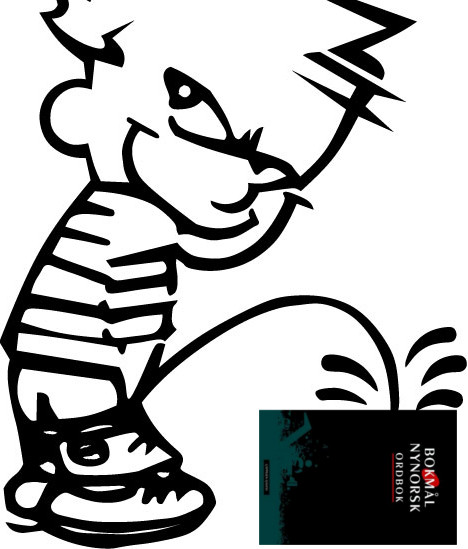

Kampen er i gang. Snart har vi vunne. Om ein går historisk til verks og ser på alle dei store nynorske sigrane, så kan det ikkje vere mykje tvil om at vi snart er kvitt bokmålet. Det kan ikkje vere mykje tvil om at vi nærmar oss samfunnet vi alle drøymer om: Samfunnet der bokmålsbrukarane
enten har gitt opp frivillig eller sit bak lås og slå.
~Are Kalvø~
Nynorsk er kult
Kvifor nynorsk er så kult:

- Nynorsk er frå Noreg og Noreg er kult
- Alle dei kule kidza brukar nynorsk
- Ivar Aasen fant opp nynorsk og han er kul
- Du kan ikkje stave nymotens utan “ny”, og som kjent: Nymotens = kul
- Du blir smart av å bruke nynorsk, og det er kult å være smart
- Kvis du skrivar nynorsk trur folk at du er smart og kul
- Ordet “kul” kjem faktisk frå nynorsk
- Are Kalvø brukar nynorsk, og han er kul.
- Kvis du ikkje skrivar nynorsk er du ein danske og det er ikkje kult
- Nynorsk kallast landsmål, så heile landet bør skrive det
Fun facts isj
- Nynorsk er spansk for utruleg tøft
- Ivar Aasen var eigentleg ein undercover agent
- Kvar dag vaks nynorsk med 2000 ord, det er meir enn bokmål
- Amerikanarane og Sovjetarane prata nynorsk med kvarandre for å forhindre tredje verdskrig
- Alle nynorske ord er 10 % tøffare enn tilsvarande bokmålsord
- Kvart år møtast alle i Norge som skrivar nynorsk til eit hemmelig møte
- 99 % av alle nynorsklærarar er einige i at nynorsk er tøft
- Filmar som er dubba på nynorsk er 100 % meir spennande enn på originalspråket
Contents written by Einar Omang and Aksel Barkvoll
Written and designed by Thorvald Ballestad